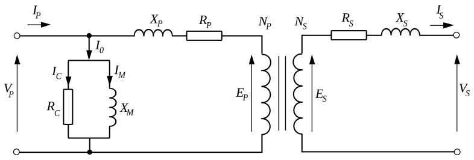

class: center, middle # EE-361 # TRANSFORMER TESTS ## Open-Circuit, Short-Circuit Test ## Ozan Keysan [ozan.keysan.me](http://ozan.keysan.me) Office: C-113 <span class="meta">•</span> Tel: 210 7586 --- # How to Test a Closed System? <img src="http://img4.wikia.nocookie.net/__cb20110826090012/uncyclopedia/images/b/b9/Watermelon.jpg" alt="Drawing" style="width: 700px;"/> --- # How to Test a Closed System? -- ## Open-Short Circuit Test for Thevenin-Norton Circuits <img src="http://4.bp.blogspot.com/-CXJsUnoMvPQ/TgKn3G1nCYI/AAAAAAAAARU/hRzkQWFWNIU/s1600/thevenins.jpg" alt="Drawing" style="width: 400px;"/> --- # Procedure for Transformers -- - # Open Circuit Test -- - # Short Circuit Test --- # Open Circuit Test ## Secondary Side Open-Circuited (No Load) <img src="http://upload.wikimedia.org/wikipedia/commons/d/d8/Open_circuit_test.png" alt="Drawing" style="width: 900px;"/> --- # Open Circuit Equivalent Circuit  --- # Simplified (Approximate) Equivalent Circuit ## Open Circuit Test  --- # Simplified (Approximate) Equivalent Circuit ## Open Circuit Test <img src="http://3.bp.blogspot.com/-1a0bC7ei3-Q/TcR65oQEBkI/AAAAAAAAAU4/oUY5ZtfOduI/s1600/FIVE116.jpeg" alt="Drawing" style="width: 700px;"/> --- # Short Circuit Test <img src="./images/Short_Circuit_test.jpg " alt="Drawing" style="width: 700px;"/> In short-circuit test applied voltage is much smaller than the rated voltage. ### \\(V\_1 \ll V\_{rated} \\) [What happens if you apply rated voltage at short-circuit?](http://www.youtube.com/watch?v=WkDCS8xeobg) [Trafo Kısa Devre](https://www.youtube.com/watch?v=_Qh822feKZo), [Bursa trafo patlaması](http://www.olay.com.tr/bursa-da-trafo-patlamasi-panige-sebep-oldu/78434/) --- # Short Circuit Equivalent Circuit ### Neglect Parallel Branch! #### Current in the parallel branch is negligible due to small input voltage. <img src="http://2.bp.blogspot.com/-m_qRT7Mr8LI/TcSF-EqjnhI/AAAAAAAAAVA/zqT-PrWAqt8/s1600/FIVE121.jpeg" alt="Drawing" style="width: 450px;"/> -- #### Series impedances can be calculated --- # Example --- # Example ## A 1000 VA, 230/115 V transformer has been tested from its primary winding: ## Find the equivalent circuit parameters. -- ## No-load Test: ### $$V_o = 230 V \quad I_o = 0.45 A \quad P_o = 30 W $$ --- #Example ## 1000 VA, 230/115 V transformer has been tested from its primary winding: ## Find the equivalent circuit parameters. ## Short Circuit Test: ### $$V_s = 13.2 V \quad I_s = 6 A \quad P_s = 20.1 W $$ <!-- # Electrical Safety ## You're just a resistor! ### Some incidents (warning: may be disturbing) [20kA Arc](www.youtube.com/watch?v=hA-w0QAaxRU),[Arc Flash](www.youtube.com/watch?v=dPJtknGmsys),[Overhead line electructed workers](http://www.youtube.com/watch?v=x8xOtw-ZP3E) # Electrical Safety - ## Cut-off electricity - ## Protect Yourself - ## First Aid (Seconds count) - ##Call for help [Safety video](www.youtube.com/watch?v=6rZcQTbOfLM), [Safety video2](http://www.youtube.com/watch?v=wal2KP1bbIY), [Safety video3](http://www.youtube.com/watch?v=WNot2owIv8c) --> --- ## You can download this presentation from: [keysan.me/ee361](http://keysan.me/ee361)